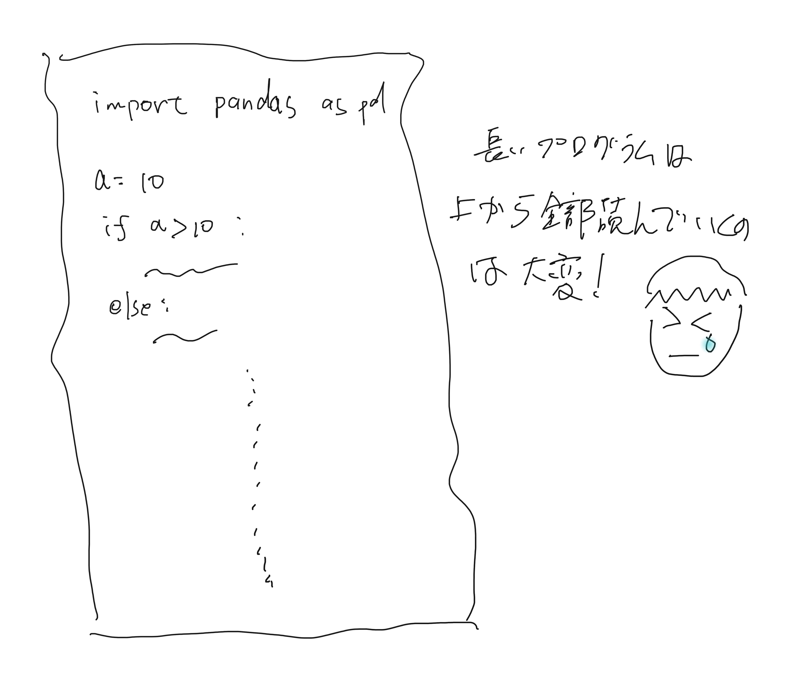
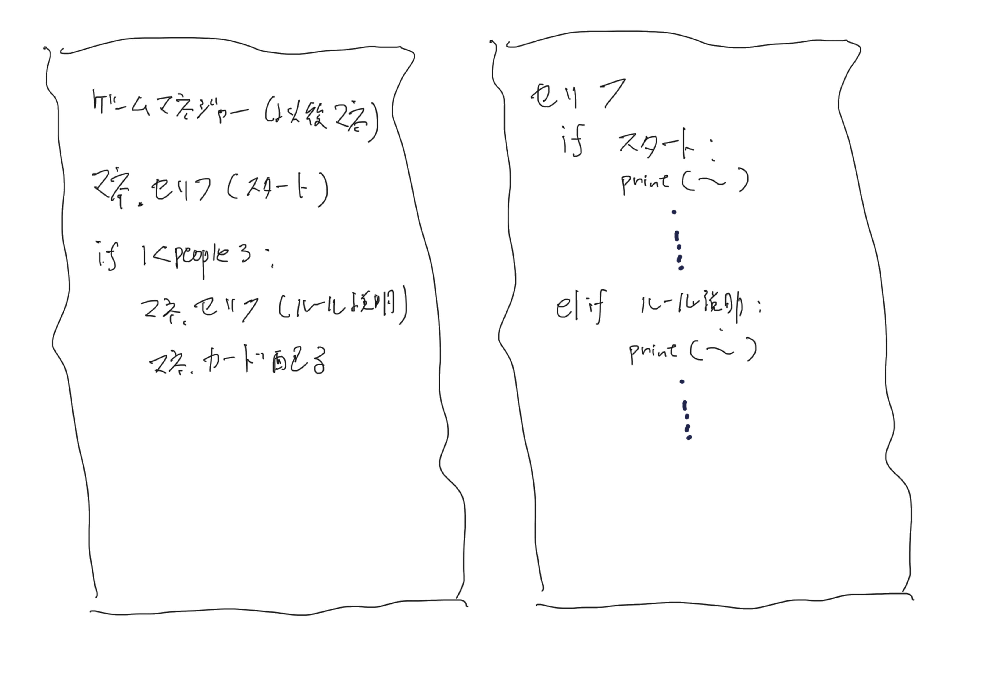

みなさんの周りはデジタルサービスに溢れていて、IT人材は不足しています。
Pythonは将来性あり＆入門にも良い。
参考(外部サイト)
プログラミングの例はインターネット上や本に、たくさんあります。
ChatGPTで簡単なプログラムは書いてくれるようになりました。
これらの資源を利用して、自分の作りたいものを作れるようになるには、
何をしたいか考える力、
検索する力、
編集する力が必要と考えられます。
ChatGPTの始め方(外部サイト)
編集する力と言っても、他人が書いたプログラムってわかりづらいですよね？

例えば、網倉くんの大作
こんな感じで書かれていたらどうでしょうか？

おおまかな流れを理解しやすく、整理しやすい！
そんな時に役に立つのが、オブジェクト指向！
参考：
オブジェクト指向とは(外部サイト)
オブジェクト指向的な考え方はいろんな言語に取り入れられているので勉強しておいて、得しかありません。
また、オブジェクト指向を覚えると、グループで行う開発もやりやすいです。（「この部分作って」がやりやすい）
この例も先輩達がpythonを使って、オブジェクト指向で作ったものです。
(場所データをQRに変換する部分、印刷に適した形に変換する部分、全体を統合する部分)